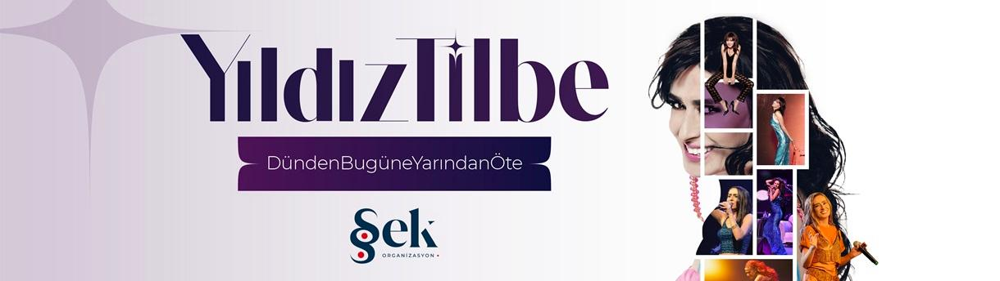

YILDIZ TİLBE
9 Haziran 2024 - 21:00

Aşıkların, üzülenlerin, yalnızların şarkıcısı Yıldız Tilbe, 9 Haziran 2024 Pazar günü Beşiktaş Tüpraş Stadyumu’nda Şek Organizasyon tarafından düzenlenen dev bir konser verecek.
Yıldız Tilbe kariyerinin 30’uncu yılı kutlamalarını bir stadyum konseri ile taçlandırıyor. Türk popunun duygusal ve etkileyici sesi Yıldız Tilbe, 9 Haziran 2024 Pazar günü Beşiktaş Tüpraş Stadyumu’nda düzenlenecek devasa bir konserle hayranlarıyla buluşacak. Yıldız Tilbe Türkiye’de çok az sanatçının cesaret ettiği stadyum konserlerinden birini gerçekleştirmek için hazırlıklara başladı. Şek Organizasyon’un öncülüğünde düzenlenecek bu muhteşem etkinlik, Yıldız Tilbe’nin eşsiz performansıyla izleyicilere unutulmaz anlar yaşatacak.
Yıldız Tilbe, 30 yıldır Türk popuna yön veriyor ve dinleyicilerinin hem acılarına hem sevinçlerine ortak oluyor. Bu özel stadyum konseri, Tilbe’nin kariyerinde dönüm noktası olacak ve izleyicilere uzun süre hafızalarında kalacak bir deneyim sunacak. Yıldız Tilbe bu özel gecede sevilen eserlerinin yanı sıra farklı tarzlarda şarkıları da dinleyicileriyle paylaşacak.
Etkinlik Kuralları
- 6 yaş altı konsere alınmamaktadır. 6 ve 6 yaş üstü her yaştan katılımcı bilete tabidir.
- Organizatör firma etkinlik için uygun görmediği kişileri bilet ücretini iade etmek kaydı ile içeri almama hakkına sahiptir.
- Organizasyon şirketi, öngörülmeyen ve kaçınılmaz nedenlerden ötürü programda her türlü değişiklik yapma hakkını saklı tutar.
- Organizasyon şirketi, bilet fiyatlarında değişiklik yapma hakkına sahiptir.
- Etkinlik biletleri devredilemez ve iade edilemez. Kayıp biletler için yenisi basılmayacaktır. Satın alınan bilet yazılı izin alınmadığı taktirde; reklam, yarışma, çekiliş, promosyon vb. Kişisel kullanım haricinde ticari ya da ticari olmayan amaçlarda kullanılamaz. Bu amaçla kullanılan biletler iptal edilecektir ve yasal işlem başlatılacaktır.
- Etkinliğe katılan kişilerin fotoğraf ve video çekimlerinin tanıtım materyallerinde kullanım hakkı etkinlik organizasyonuna ait olup katılımcı, etkinliğe katılarak bu hakkın kullanılmasını kabul etmektedir.
- Profesyonel olmayan cihazlarla, katılımcıları ve sanatçıları rahatsız edecek ve özel hayat gizliliğini ihlal edecek çekim yapılmamasına özen gösterilmelidir.